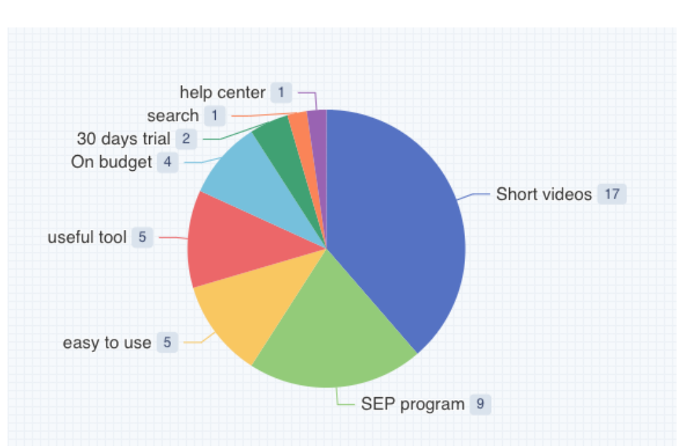
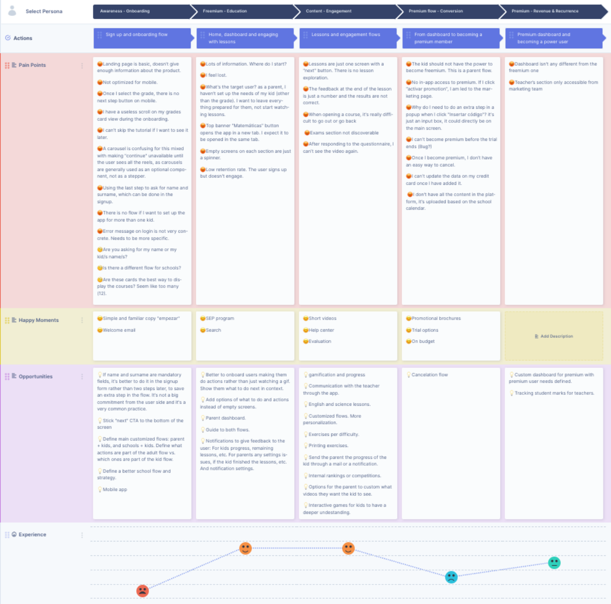
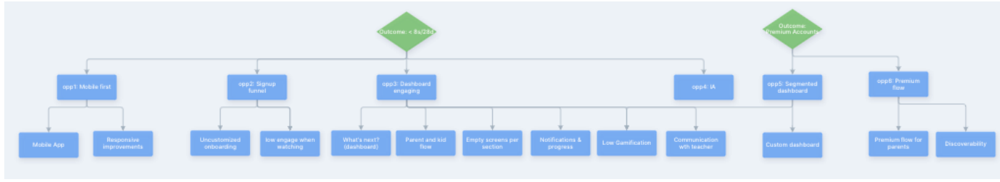
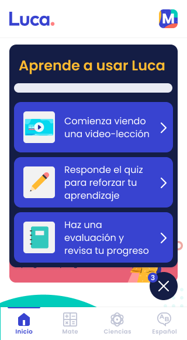
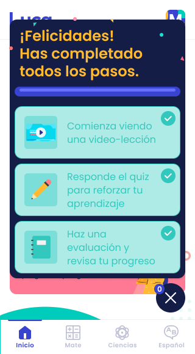

Case study · Edtech
A discovery practice built from zero, proven end to end.
Luca is a K-6 edtech platform. I joined as its sole product designer with no existing discovery practice in place, built one from scratch, and used it to drive a real onboarding redesign tied to specific growth targets.
The starting point
No discovery practice existed yet. I had to build one from the ground up and prove it worked.
When I joined, decisions about what to build were made without a research foundation to stand on. Rather than jumping straight into redesigns, I started by mapping what the product actually looked like today and where users were actually struggling, working closely with a data scientist to ground it in more than opinion. That combination, qualitative interviews plus a real quantitative partner, is what makes Luca the one quant-research case study among my recent work.
Kickoff research
Mapping the whole journey before touching a single screen.
I ran a full kickoff research pass: a current-flow diagram, a 13-competitor benchmark (Aleks, Edmodo, Kahoot!, Smartick, Khan Academy, and others, plus what tools the kids themselves already used, like YouTube and Google Classroom), and interview themes charted by frequency. The clearest happy-moment signal was short-form video content, cited far more than anything else.

I plotted all of it onto a full user journey, phase by phase from onboarding through power-user retention, with pain points, happy moments, opportunities, and an experience curve for each stage.

From there, I built an opportunity solution tree (Teresa Torres' framework from Continuous Discovery Habits), branching from two business outcomes down to concrete opportunities to test. One branch, directly under the retention outcome, was uncustomized onboarding.

Anchor project
The onboarding redesign that followed directly from the tree.
The uncustomized-onboarding opportunity was the direct output of the discovery process above. With two growth targets on the table for the product (signups moving from 1k to 7k to 10k, and retention from 5.4% to 8.3% to 8.9% over two months), I ran a second, more focused competitive pass benchmarking 12 products specifically on onboarding step count, then redesigned the flow from lo-fi wireframes through to hi-fi screens.


The same discovery practice also produced Luca's gamification system (an avatar, student ranking, and a daily riddle feature), among other outputs. One practice, multiple shipped outcomes.
Outcome
Shipped, with a direct line from research to result.
The onboarding redesign shipped. The product has likely evolved considerably since, as any product does, but the practice built here, kickoff research, an opportunity tree, and a redesign with a direct line back to business outcomes, started from nothing and stood on its own. That rigor came from having a repeatable system.
lucaedu.com →